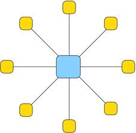
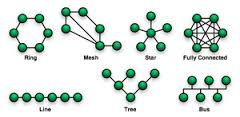

Quest'anno abbiamo studiato le varie topologie di rete tra cui la rete ad albero,la rete a stella,la rete a bus,la rete ad anello.
Quella ad anello per esempio permette di mettere in comunicazione due o più entità tramite un sistema di comunicazione richiuso su se stesso,quella a bus permette di mettere in comunicazione due o più entità tramite un cavo che fa la funzione di autostrada di
comunicazione (bus).Poi c'è la rete a stella che permette di mettere in comunicazione due o più entità partendo da un apparato centrale.Infine c'è la rete ad albero all'interno del quale i nodi sono collegati fra di loro e sono disposti in modo ramificato. |
 |
 |